闻乐 发自 凹非寺
量子位 | 公众号 QbitAI
字节Seed都开始用化学思想搞大模型了——
深度推理是共价键、自我反思是氢键、自我探索是范德华力？！
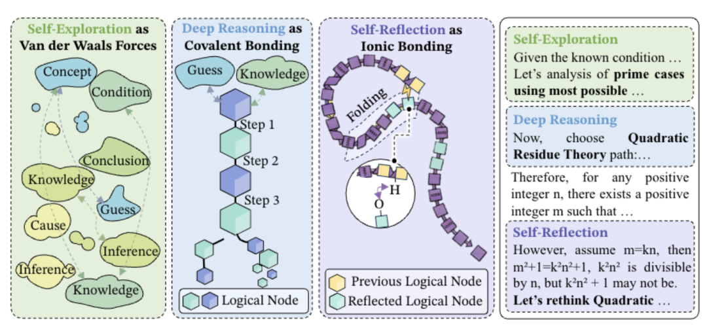
传统的大模型长思维链推理基本把AI的思考过程等同于线性结构。
但很多情况下，后续的一个关键结论，可能需要回过头去验证早早提出的假设。
CoT把这种非线性的依赖关系忽略了。
字节Seed在论文《The Molecular Structure of Thought》中首次给大模型的长链思维定义了分子式结构。
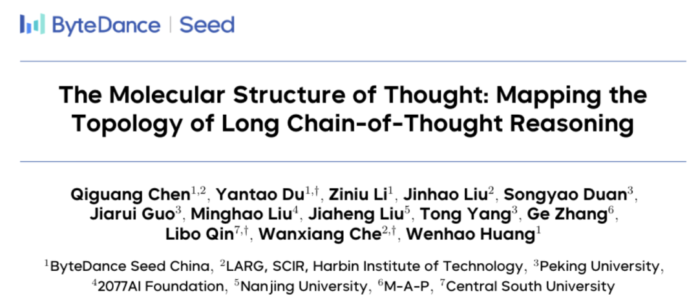
在这种分子拓扑中，三种键是怎么相互配合的？
好的推理像分子结构
团队把DeepSeek-R1、gpt-OSS等强推理模型的长链思维拆成一步一步的，然后给每一步之间的“跳跃”打上标签。
打完标签发现，所有有效的长链思维里，其实就三种基础动作来回组合。
第一种叫深度推理，像共价键一样结实。
通俗来说就是类似“因为A所以B，因为B所以C”的硬逻辑推进。
团队在语义空间里做了一个很形象的量化分析，把模型的每一步思考都当成一个点，看这些点最后会散成多大一个圈。
圈子越小，说明模型越没跑题，思考越聚焦。
结果发现，加上深度推理之后，这个散点圈直接缩水22%。
深度推理确实起到了收束杂念、锁定核心逻辑的关键作用。
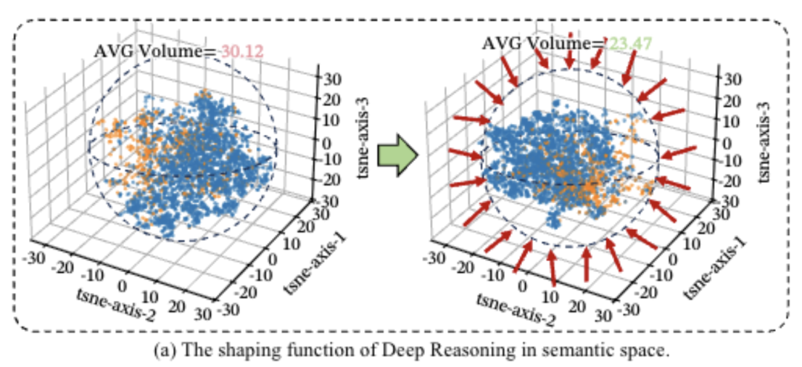
第二种叫自我反思，像氢键一样有弹性但稳定。
类似于“等等，我刚才那步是不是想错了”“让我重新检查一下前面的假设”，能把后面的思考拐回来跟前面的节点呼应上，形成一种折叠感。
团队测了模型自我反思时的思维轨迹，把每一步思考都看成语义空间里的一个点，然后计算反思时会跳回多远、落在哪里。
发现81.72%的反思步骤，都会精准落回之前已经形成的靠谱思路区域里。
还对比了反思前后的思维范围，反思前，语义空间体积是35.2，反思后，直接压缩到31.2。
再看聚类结果就更清楚了，反思之后，同一类正确思路的点会紧紧抱团，而那些零散、跑偏的分支会被自动推开。
也就是说，自我反思氢键能把靠谱逻辑揉得更紧实、把跑偏想法筛出去、稳住整个推理大局，让长链思考不再松散混乱。
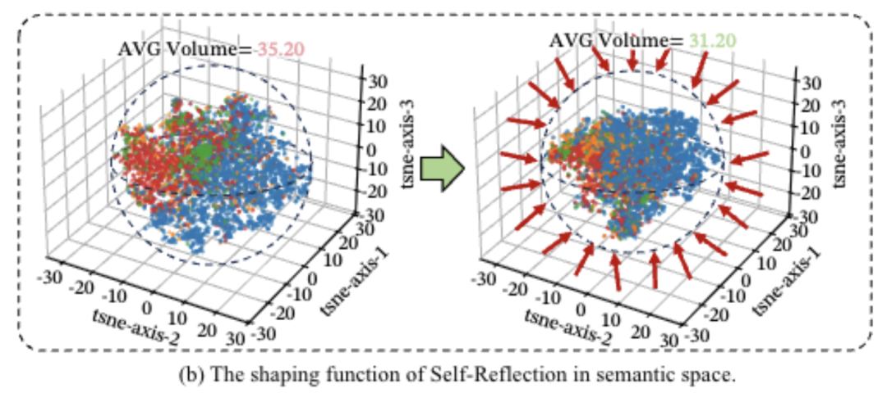
第三种叫自我探索，像范德华力一样弱，但覆盖面广。
这个就类似于“要不咱们试试这个角度”“有没有另一种可能性”，在语义空间里找新的解题路径。
量化分析显示，加上探索行为之后，模型在语义空间里的思维覆盖范围能从23.95扩大到29.22。
虽然思路一打开稳定性就会下降，容易跑偏想歪，但能让模型跳出死胡同，不卡在局部最优解里，真正找到全新的解题路线。
研究发现，所有强推理模型的三种思维行为比例和转换规律都高度一致，相关性超过0.9，说明有效长链推理存在通用的稳定拓扑结构。
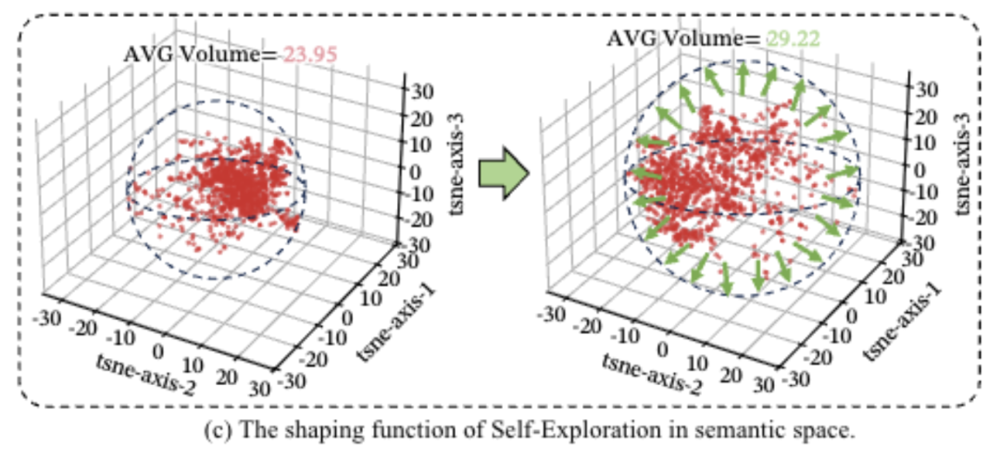
你可能觉得“共价键”“氢键”只是个比喻，但论文发现，这个比喻背后藏着严格的数学对应。
在Transformer里，注意力权重的计算方式长这样：
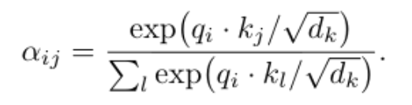
眼熟吗？这和统计力学里的玻尔兹曼分布一模一样：
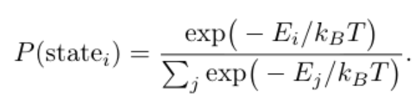
如果把负注意力分数看作能量，那么注意力权重就是模型在语义空间里按“能量”高低选择路径的概率就是能量越低，被选中的概率越高。
论文进一步分析了三种行为对应的“注意力能量”。
深度推理通常发生在相邻步骤之间，能量最低; 自我反思会跳回较远的步骤，能量中等; 自我探索跳得更远，能量最高.
这就解释了为什么强推理模型的三种键比例如此稳定。
因为模型的注意力机制本身就在追求最低能量的推理路径，而深度推理、反思、探索正好对应了不同距离下的能量层级。
语义同分异构体和智能熵减
接着团队还抛出了语义同分异构体的概念。
这词儿是借的化学，同样的分子式，原子连接方式不同，就能搞出性质完全不同的物质。
放到推理里就是，同样的题目，同样的概念点，用不同的”化学键“组合去解，出来的推理链条可以完全不一样，但都能解对。
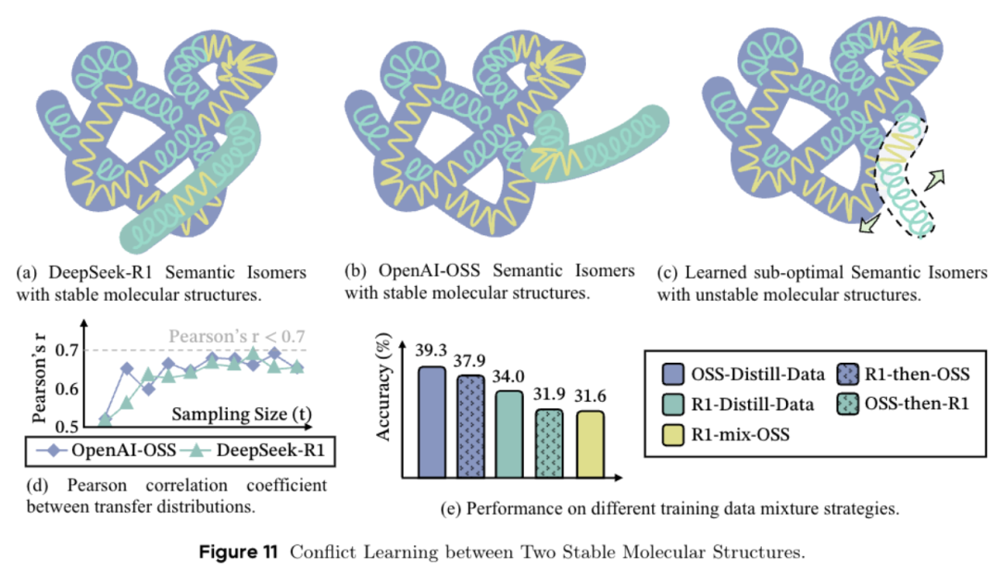
但不是所有异构体都适合拿来教模型。
这里就要引入一个关键概念熵减。
在热力学里，孤立系统总是自发走向混乱（熵增），而一个有效的长链推理过程，本质上就是在语义空间里不断降低不确定性——
从一堆可能的方向中，逐步收敛到唯一正确的答案。这个过程就是“熵减”。
而“注意力能量”机制，正是模型实现熵减的工具。
模型的注意力天然偏好能量更低的路径。
当深度推理（低能量）被反复选中，反思（中等能量）把前后逻辑折叠起来，探索（高能量）偶尔探路但不喧宾夺主，整个系统的“推理熵”就会快速下降，逻辑火速收敛。
这如论文里说的，只有那些能推动熵快速降低的“化学键”组合，才是模型真正能学会、能持续进化的稳定态。
这在实验中有个很典型的现象，从R1和OSS两个不同强推理模型中蒸馏出的推理轨迹，语义层面的内容相似度高达95%，但混在一起训练，模型反而崩溃了。
这说明，长链推理的关键是思路结构必须稳定、统一，模型才能学得会。
MoLE-Syn：从零合成稳定推理结构
发现问题就要解决问题。
基于这一整套发现，团队搞了个叫MoLE-Syn的方法，来从零合成稳定的推理结构。
具体操作就两步。
第一步，从强推理模型（比如R1、QwQ、gpt-OSS）的推理链里，抽出一张行为转移概率图。
这张图里每个节点是一种推理行为（化学键），每条边是从一个行为跳到另一个行为的概率。
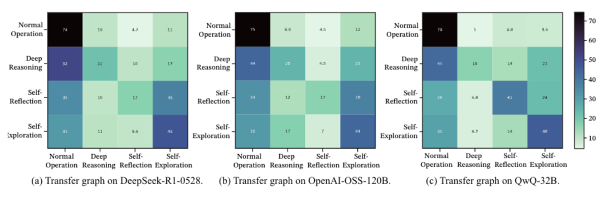
第二步，拿着这张图，让普通的指令模型照着图上画的概率去生成推理链。
用这个方法从零合成的训练数据，喂给Llama或者Qwen，效果逼近直接蒸馏R1的水平。
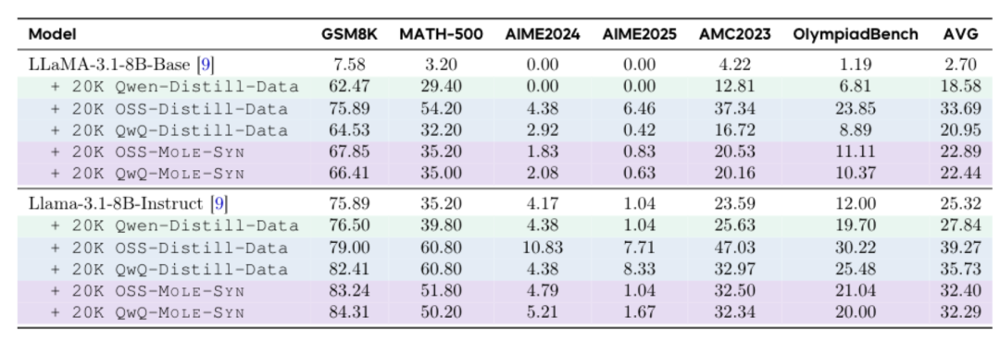
而且这么做有一个大好处就是成本低。只要拿到那张行为转移图，普通模型就能自己生产合格的长链推理数据。
团队把用MoLE-Syn初始化过的模型拿去做强化学习，发现跑起来还特别稳。
相比直接用蒸馏数据初始化的模型，MoLE-Syn版的在RL过程中收益持续增长，震荡也小得多。
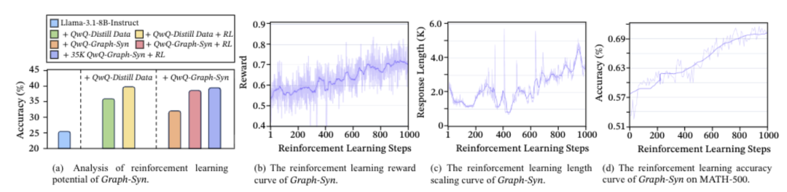
这说明一开始植入的思维结构够稳，后面的强化学习就不会出现逻辑偏移。
这项研究的负责人为字节Seed算法专家黄文灏，曾在微软亚洲研究院担任研究员。
第一作者是哈尔滨工业大学博士、字节Seed实习研究员陈麒光。
合作单位还包括北京大学、2077AI Foundation、南京大学、M-A-P、中南大学。
不得不说，这波操作有点当年薛定谔拿物理学公式推生物学那味儿了。
给大模型推理这个卷得飞起的领域，开了个挺清爽的新脑洞。
论文地址：https://arxiv.org/abs/2601.06002
一键三连「点赞」「转发」「小心心」
欢迎在评论区留下你的想法！
— 完 —
🌟 点亮星标 🌟